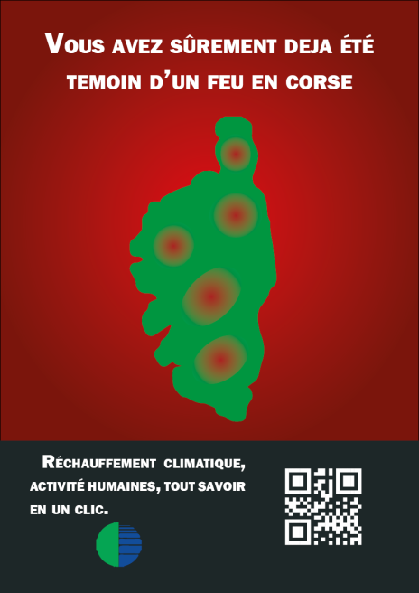
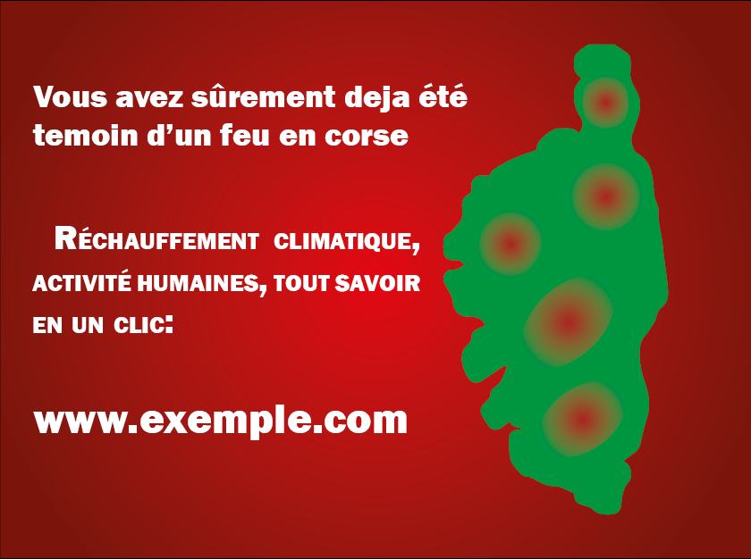

Analyse des incendies en Corse
Le rechauffement climatique declanche forcement plus d'incendies qu'autrefois. Surtout en corse ou nous sommes en alerte rouge tout les ans et ou se trouve principalement du maquis et des herbes seches. Des interdictions de feux ont été mis en place mais ils sont tout de meme courant. Analisons donc les chiffre d'un année proche: celle de 2020
Les projets autour du site

